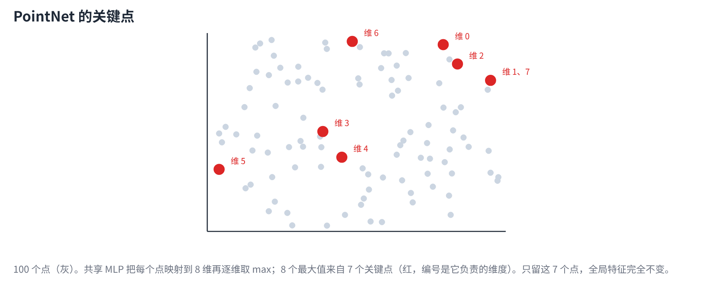
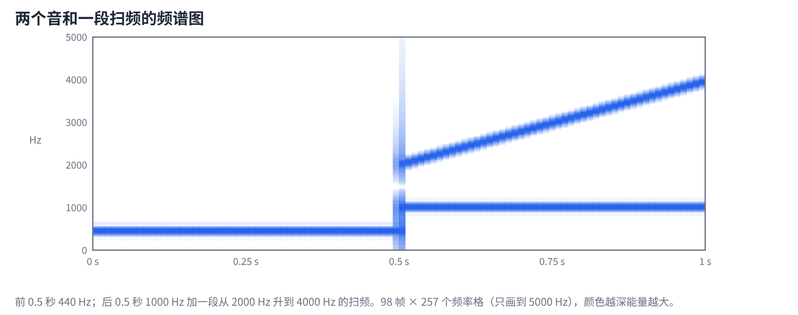
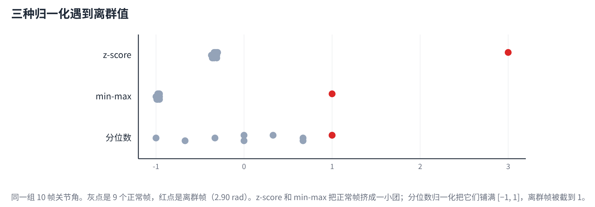
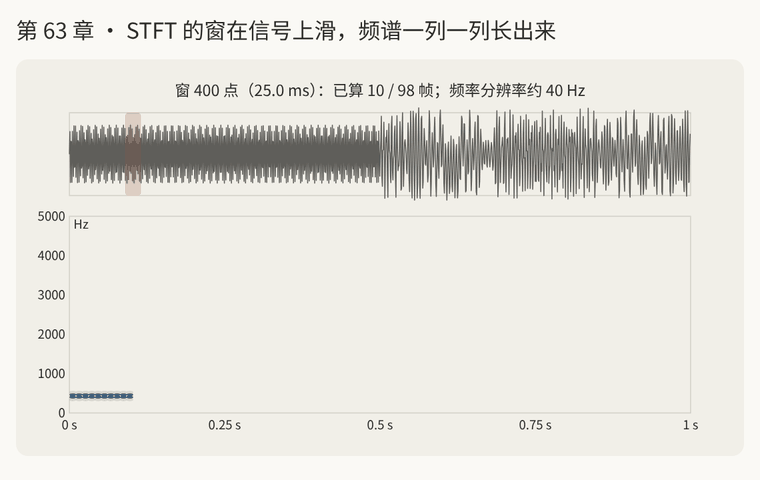

第 63 章 · 非图像模态的表示：点云的置换不变、体素与稀疏卷积、STFT 与 Mel、触觉阵列、本体感受的归一化
本地运行
git clone https://github.com/wikieden/math-and-eval-stats
cd math-and-eval-stats/code/notebooks
pip install jupyterlab torch numpy
jupyter lab ch63_nonimage_modalities.ipynb也可以下载后直接用 VS Code 打开 .ipynb 运行。需要 GPU 的章节在 Colab 里选「代码执行程序 → 更改运行时类型 → GPU」。
本章回答：一堆点没有顺序，网络怎么保证“打乱顺序输出不变”？PointNet 的 max pooling 为什么只靠几个“关键点”？一个 LiDAR 场景体素化以后有多少格是空的，稀疏卷积省在哪？一秒音频变成多少帧频谱，Mel 刻度在压缩什么？触觉阵列、关节角度这些数字进网络前要怎么处理？
讲解日期：2026-11-25 · 上一章：第 62 章 视觉-语言对齐的数学 · 下一章：第 64 章 多传感器标定与对齐
对应原文：PointNetmath-and-eval-stats/materials/text/papers/pointnet-1612.00593.txt（置换不变与对称函数，L162–L204；定理 1 的通用逼近 f ≈ γ(MAX h)，L279；定理 2 关键点集合与瓶颈维数 K，L279–L311；关键点可视化，L484–L494）；BEVFusionbevfusion-2205.13542.txt（LiDAR 分支用 VoxelNet / SparseConvNet，L141）
本章缩写：MLP = Multi-Layer Perceptron（多层感知机）；STFT = Short-Time Fourier Transform（短时傅里叶变换）；FFT = Fast Fourier Transform（快速傅里叶变换）；Mel = 以“melody”（旋律）命名的音高刻度；n_fft = FFT 的点数；CoP = Center of Pressure（压力中心）；LiDAR = Light Detection and Ranging（激光探测与测距）。全部缩写见 附录 · 缩写与术语表
讲解
第一步：点云没有顺序：对称函数（2026-11-25）
类比：数一袋硬币的总额，倒出来的顺序无所谓。“求和”“取最大”这类运算不管输入顺序，叫对称函数；“第 1 个乘 1、第 2 个乘 2……”就和顺序有关。
N 个点有 N! 种排列，同一个点云对应 N! 个输入矩阵（L162–L163）。PointNet 的做法（L196–L204）：
每个点先过同一个MLP \(h\)（共享权重，顺序无关），再逐维取 max（对称），最后 \(\gamma\) 处理全局特征。定理 1（L279）说这种形式能逼近任意连续的集合函数。
关键点：全局特征的每一维都是某一个点贡献的最大值。K 维特征最多由 K 个点决定，这些点叫关键点集合（定理 2，L279–L311）；删掉其余的点，全局特征一点都不变（L484–L494 的可视化：关键点大致勾出物体的骨架）。
例子（100 个二维点，随机两层 MLP 映射到 8 维再 max）：
| 操作 | 结果 |
|---|---|
| 打乱点的顺序 | max 特征变化 0.0 |
| 关键点个数 | 7（≤ 8 维） |
| 只留这 7 个点 | max 特征变化 0.0 |
| 对照：把点按顺序拼成长向量再过线性层 | 打乱后输出变了 |

图 63-1 · 100 个点（灰），其中 7 个关键点（红，带编号）。全局 max 特征只由这 7 个点决定；对 max 特征来说，其余 93 个点删掉也没关系这也是 PointNet 的鲁棒性来源和局限：丢一些非关键点无所谓；但 max 只看极值、没有局部邻域结构，所以有了 PointNet++（分层采样 + 局部 PointNet）。
一句话：共享的逐点 MLP + 对称的 max，保证打乱顺序输出不变；K 维全局特征只由不超过 K 个关键点决定。
第二步：体素化与稀疏卷积（2026-11-25）
另一条路：把点放进规则的三维格子（体素），就能用卷积了（第 35 章）。问题是三维格子极其稀疏。
例子（100 m × 100 m × 8 m 的范围，0.2 m 体素；地面 10 万个点 + 5 辆车的表面各 4000 点）：
| 量 | 数 |
|---|---|
| 点数 | 120,000 |
| 体素总数 | 500 × 500 × 40 = 10,000,000 |
| 非空体素 | 94,569 |
| 非空占比 | 0.95% |
稠密的 3 × 3 × 3 卷积要在一千万个位置上算，其中 99% 的输入全是 0。稀疏卷积只存非空体素（坐标 + 特征的哈希表），只在它们上面算：
- 普通稀疏卷积：输出位置 = 输入非空位置的膨胀（每层非空区域会变大）；
- 子流形稀疏卷积（submanifold）：输出位置 = 输入非空位置本身，稀疏度不变，深网络里用得最多。
BEVFusion 的 LiDAR 分支（L141）就是 VoxelNet / SparseConvNet 这一类，最后沿高度方向压扁成 BEV 特征图。
一句话：三维格子里 99% 是空的；稀疏卷积只在非空体素上算，子流形版本还保持稀疏度不变。
第三步：音频：STFT 与 Mel 频谱（2026-11-25）
类比：乐谱。整段音乐的频谱（一次 FFT）只告诉你用了哪些音，不告诉你什么时候用的；乐谱是“每一小段时间里有哪些音”。STFT 就是把信号切成重叠的短窗，每窗做一次 FFT。
\(w\) 是窗函数（汉宁窗），\(H\) 是跳步。语音的常用设定：16 kHz 采样，窗 25 ms（400 点）、跳 10 ms（160 点）、n_fft = 512。
例子：
| 量 | 数 |
|---|---|
| 1 秒的帧数（不补边） | 1 + (16000 − 400)/160 = 98 |
| 1 秒的帧数（torch.stft 默认 center=True，两边各补 n_fft/2） | 1 + 16000/160 = 101 |
| 频率格数 | 512/2 + 1 = 257 |
| 每格频率宽度 | 16000/512 = 31.25 Hz |
| 440 Hz + 1000 Hz 一帧的两个峰 | 437.5 Hz、1000 Hz（440 落在两格之间，取最近的格） |
窗越长频率分辨率越细、时间分辨率越粗，这是不确定性原理（Δt · Δf 有下限）。
Mel 刻度：人耳对低频的差别敏感、对高频不敏感。\(m = 2595\log_{10}(1 + f/700)\)：
| f（Hz） | 1000 | 2000 | 4000 | 8000 |
|---|---|---|---|---|
| Mel | 1000.0 | 1521.4 | 2146.1 | 2840.0 |
频率翻倍，Mel 只增加约 40–50%。Mel 滤波器组在 Mel 刻度上等间隔放 80 个三角形滤波器，把 257 个线性频率格压成 80 维，再取 log：这就是语音模型（如 Whisper）的输入 log-Mel 频谱。

图 63-2 · 前 0.5 秒是 440 Hz，后 0.5 秒是 1000 Hz 加一个从 2000 Hz 升到 4000 Hz 的扫频。横轴时间（98 帧），纵轴频率（0–8000 Hz），颜色越深能量越大场景代码：torchaudio 的 log-Mel 频谱（真实库调用；本书环境没装 torchaudio，没跑过）：
mel = torchaudio.transforms.MelSpectrogram(sample_rate=16000, n_fft=512, win_length=400, hop_length=160, n_mels=80)
logmel = torch.log(mel(wave) + 1e-6) # (80, 101)：80 个 Mel 频带 × 101 帧
一句话：STFT 把音频切成重叠短窗、每窗一次 FFT；1 秒 16 kHz、跳 10 ms 约 100 帧；Mel 刻度压缩高频，80 个 Mel 频带取 log 就是语音模型的标准输入。
第四步：力与触觉阵列（2026-11-25）
触觉传感器常是一个 m × n 的压力阵列（像一张低分辨率的“压力图像”），可以直接当图像用卷积处理；同时有两个物理量最常用：
例子（4 × 4 阵列，格距 5 mm；第 1 行第 1 列 2 N、第 1 行第 2 列 1 N、第 2 行第 2 列 1 N，行列从 0 数）：总力 4 N，压力中心 (7.50 mm, 6.25 mm)。压力中心的移动可以提前反映物体在手里打滑（第 15 章的摩擦锥：切向力 / 法向力接近 μ 时就要滑）。
六维力 / 力矩传感器给 (Fx, Fy, Fz, τx, τy, τz)，单位分别是 N 和 N·m，量级可以差一两个数量级，必须按维度归一化（下一步）。
一句话：触觉阵列是一张压力图，总力和压力中心是两个最有用的物理量；力和力矩单位不同，要按维度归一化。
第五步：本体感受的归一化（2026-11-25）
关节角（rad，±3）、关节速度（rad/s，±20）、夹爪开度（m，0–0.08）放进同一个向量，量级差几百倍。不归一化，网络的输入层就被大的那几维主导（第 39 章）。三种常见做法：
| 做法 | 公式 | 遇到离群值 |
|---|---|---|
| z-score | (x − μ)/σ | μ、σ 都被拉偏 |
| min-max 到 [−1, 1] | 2(x − min)/(max − min) − 1 | 其余数据全挤在一端 |
| 分位数到 [−1, 1]（π0、Diffusion Policy 等常用 1% / 99% 分位数） | 2(x − q_lo)/(q_hi − q_lo) − 1，再截断 | 离群值被截到 ±1，其余正常展开 |
例子（一个关节 10 帧：0.07 到 0.13 rad 之间，最后一帧离群值 2.90；只有 10 帧，用 10% / 90% 分位数）：
| 做法 | 前 9 帧的范围 | 离群帧 |
|---|---|---|
| z-score | −0.37 到 −0.30 | 3.0 |
| min-max | −1.00 到 −0.96 | 1.0 |
| 分位数 | −1.00 到 1.00 | 1.0（截断） |
前两种把正常数据压到一个很窄的区间，网络几乎分不出它们；分位数归一化让正常数据铺满 [−1, 1]。动作也一样：扩散 / flow 动作头（第 28 章）的噪声是标准正态，动作量级必须先对齐到 [−1, 1] 附近。

图 63-3 · 同一组 10 帧数据的三种归一化。灰点是 9 个正常帧，红点是离群帧；z-score 和 min-max 把灰点挤成一团，分位数归一化把它们铺开一句话：本体感受各维量级差几百倍，必须逐维归一化；有离群值时用分位数，再截断，正常数据才不会被挤成一团。
动画演示：STFT 的窗在信号上滑，频谱一列一列长出来

可交互版：animations/63-nonimage-modalities.html（滑块调窗长；按钮重新播放）。
怎么看：
- 上面是波形，橙色框是当前的窗（第三步）；
- 下面是频谱图，窗每往右跳一步，就多出一列；
- 把窗调长：频率方向的线条变细（频率分辨率高），但扫频那一段在时间上变糊。
练习与作答记录
题 1（第三步）：2 秒、16 kHz 的音频，窗 400、跳 160、不补边，STFT 有多少帧？
作答：（待作答）
题 2（第一步）：下面哪些聚合对点的顺序不变：求和、平均、逐维最大、按 x 坐标排序后拼接、按输入顺序拼接？
作答：（待作答）
题 3（第四步）：2 × 2 触觉阵列，格距 1 cm，压力 [[1, 0], [0, 3]]（单位 N，左上角在原点），总力和压力中心是多少？
作答：（待作答）
口诀
点没有顺序，共享 MLP 加 max；K 维只看 K 个关键点；
三维格子九成九是空，稀疏卷积只算非空；
短窗滑动做 FFT，跳十毫秒一秒百帧；Mel 压高频取对数；
压力图看总力和压力中心；
本体各维量级不同，分位数归一再截断。
本章复习卡片
ST204（PointNet 的对称函数与关键点）、ST205（体素稀疏度与稀疏卷积；STFT 帧数与 Mel 刻度）、ST206（触觉阵列的压力中心；本体感受的三种归一化）。练习做完后，按答错、卡住的地方补上。
附录 · 延伸阅读
留给以后深入学习用，不影响本章主线。★ 是建议先读的。
推荐阅读
| 读什么 | 读哪里 | 读它为了什么 |
|---|---|---|
| ★ PointNet（Qi 2017） | §4（L162–L311） | 对称函数、定理 1 / 2 |
| PointNet++（Qi 2017） | 分层采样与分组 | 补上局部结构 |
| BEVFusion（Liu 2022） | LiDAR 分支（L141） | 稀疏卷积在自动驾驶里的用法 |
| torch.stft / torchaudio 文档 | center、window 参数 | 帧数和补边的细节 |
| 第 35 章 卷积 | 卷积与 FFT | STFT 和卷积的关系 |
| 第 39 章 归一化 | 输入归一化 | 量级不一致的后果 |
数学原理
- 对称函数的表示：任意连续的集合函数可以写成 ρ(Σφ(xᵢ))（Deep Sets）或用 max 逼近（PointNet 定理 1）。
- 稀疏度：表面点云在三维格子里的占用约为 (表面积 / 体素面积) / 体素总数，随分辨率提高按 1/体素边长 下降。
- 时频不确定性：窗长 T 秒对应的频率分辨率约 1/T Hz。
- Mel 刻度：m = 2595 log₁₀(1 + f/700)，低频近似线性、高频近似对数。
- 压力中心：压力分布的一阶矩除以零阶矩。
公式清单
| 公式 | 意思 |
|---|---|
| \(f \approx \gamma(\max_i h(x_i))\) | PointNet |
| \(1 + \lfloor (N - W)/H\rfloor\) | STFT 帧数（不补边） |
| \(\Delta f = f_s/N_{\text{fft}}\) | 频率分辨率 |
| \(m = 2595\log_{10}(1 + f/700)\) | Mel 刻度 |
| \(\text{CoP} = \sum p_i\mathbf x_i/\sum p_i\) | 压力中心 |
| \(2(x - q_{lo})/(q_{hi} - q_{lo}) - 1\) | 分位数归一化 |
代码对照：把本章的数字用代码算一遍
代码在仓库本地
math-and-eval-stats/solutions/chapter-code/ch63_nonimage_modalities.py，配套测试tests/test_ch63.py：
bash cd math-and-eval-stats/solutions/chapter-code uv run python ch63_nonimage_modalities.py uv run pytest tests/test_ch63.py
讲义 ↔ 代码：
| 讲义 | 公式 | 写法 | 跑出来 |
|---|---|---|---|
| 第一步 PointNet | 共享 MLP + max | pointnet_feature、critical_demo() |
7 个关键点，打乱不变 |
| 第二步 体素 | 非空占比 | voxel_sparsity() |
0.95% |
| 第三步 STFT / Mel | 帧数、Mel | stft_frames、hz_to_mel、two_tone_peaks |
98 / 101 帧；1000 → 1000 |
| 第四步 触觉 | 压力中心 | center_of_pressure() |
(7.50, 6.25) mm |
| 第五步 归一化 | 三种做法 | normalize_all() |
分位数铺满 [−1, 1] |
关键几行：
h = np.maximum(pts @ w1, 0) @ w2; return h.max(0), h.argmax(0) # 共享 MLP，逐维 max；argmax 就是关键点
ijk = np.floor((pts - [-50, -50, -1]) / voxel).astype(int) # 体素坐标
q = np.clip(2 * (x - lo) / (hi - lo) - 1, -1, 1) # 分位数归一化再截断
代码里才看得到的 3 件事：
- 关键点个数可以小于维数：同一个点可能同时是好几维的最大值（这里 8 维只有 7 个关键点）。
- 补边改变帧数：
center=True时两边各补 n_fft/2，帧数变成 1 + N/H，和标签对齐时差 3 帧就会错位。 - 统计量要只在训练集上算：归一化用的 min、max、分位数如果在测试数据上重算，等于把测试分布泄露进来。
自己改一改（不影响练习答案）：
- 把
pointnet_feature的维数 d 改成 32，关键点有多少个？ - 把
voxel_sparsity的体素改成 0.1 m，非空占比变成多少？